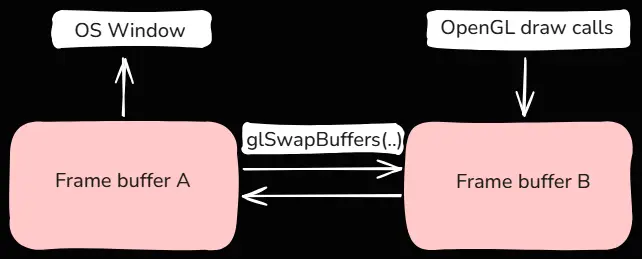
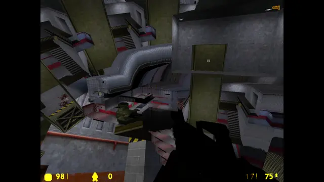

Creating a window
Now that we have finally made it to Hello world we need to focus more on making a window
To create our window we need to include the libraries we will be using. This means including <glad/glad.h> and <GLFW/glfw3.h>, where glfw will handle the window creation and glad will handle working with the OpenGL API
GLFW initialization
Before creating a window we need to hint to GLFW which OpenGL version we will be using
glfwInit();
// For OpenGL version 3.3
glfwWindowHint(GLFW_CONTEXT_VERSION_MAJOR, 3);
glfwWindowHint(GLFW_CONTEXT_VERSION_MINOR, 3);
glfwWindowHint(GLFW_OPENGL_PROFILE, GLFW_OPENGL_CORE_PROFILE);
// On Mac OS X you need to add the following line
// glfwWindowHint(GLFW_OPENGL_FORWARD_COMPAT, GL_TRUE);Now we are finally able to create a window
const unsigned int width = 800;
const unsigned int height = 600;
const char* windowTitle = "My First Window!";
GLFWwindow* window = glfwCreateWindow(width, height, windowTitle, nullptr, nullptr);
if(window == nullptr){
// error
return;
}
glfwMakeContextCurrent(window);GLAD initialization
Before we use any OpenGL functions we need to tell GLAD to start managing all OpenGL function pointers
if (!gladLoadGLLoader((GLADloadproc)glfwGetProcAddress)){
// error
return;
} Managing the viewport
We need to tell OpenGL how big is our viewport (in this context window). To do that we can call the glViewport(...); function
glViewport(0, 0, 800, 600);Now of course when the user changes the window size, the glViewport will no longer be accurate. You would notice that by the viewport visibly stretching in the window. To fix that we can add GLFW a callback on window resize and change the viewport ourselves like so
void OnWindowResizeCallback(GLFWwindow* window, int newWidth, int newHeight){
glViewport(0, 0, newWidth, newHeight);
}
// Registering the callback once after creating the window:
glfwSetFramebufferSizeCallback(window, OnWindowResizeCallback);Main update loop
If you run the app at this stage you will notice that everything gets closed almost immediately as there is no update loop to keep us from reaching the return in main(). To fix that we need to make a loop where our repeating logic gets ran before each frame. To do that we need to put this in our main() before our final return
while(!glfwWindowShouldClose(window)){
// input handling, rendering, ...
// Swaps the front and back buffers
glfwSwapBuffers(window);
// Updates the window state with any events that were triggered like mouse movement or keyboard input
glfwPollEvents();
}Front and back buffers
Our window came with two frame buffers that store what is rendered onto our screen. Drawing and displaying the same frame buffer would result in flickering and artifacts. To prevent that we only see our front buffer. This is the buffer we already drew on which has the fully rendered scene. Meanwhile our back buffer is being actively drawn on by our shader programs. At the end of each frame we just swap the front and back buffers and start rendering on the other buffer using glSwapBuffers

Rendering a color
When starting to render a new frame we are effectively writing on our previous front buffer. This buffer will still have the data from our previous frame which can be an issue for us. If we want to fill the entire window using a single color we need to first set what RGBA value we are going to use
glClearColor(0.1f, 0.2f, 0.3f, 1.0f);Then before rendering each frame on our frame buffer we can clear it with the selected color using
glClear(GL_COLOR_BUFFER_BIT);Our final result will look like this (a single color across the entire screen)
Not clearing the color buffer
We do not have to clear the color buffer. Doing so will keep the “garbage” image in the current frame. If we can guarantee that we will write to the entire buffer, this is not an issue, as each pixel will be overridden anyway. If there is any area in the viewport where nothing is rendered, the previous frame will “bleed” into the current viewport. This is a well-known phenomenon that can be seen, for example, in Valve Source engine games when the camera goes out of bounds

In this screenshot from Half-Life, we can see previous frames entering the viewport because, out of bounds, there is nothing rendered to clear it
Handling input
We are currently rendering our window but now it would be nice to interact with it. Later on we might want to be able to look around or walk with W, A, S, D keys and for that we will need to create our own input manager. We can go really complex with it but for now we are going to keep it simple
void processInputs(GLFWwindow *window){
// close our window when space is pressed
if(glfwGetKey(window, GLFW_KEY_SPACE) == GLFW_PRESS)
glfwSetWindowShouldClose(window, true);
if(glfwGetKey(window, GLFW_KEY_W) == GLFW_PRESS)
glfwSetWindowTitle(window, "Window where 'W' was pressed");
}We want to call this function right at the start of our frame